Controller mode
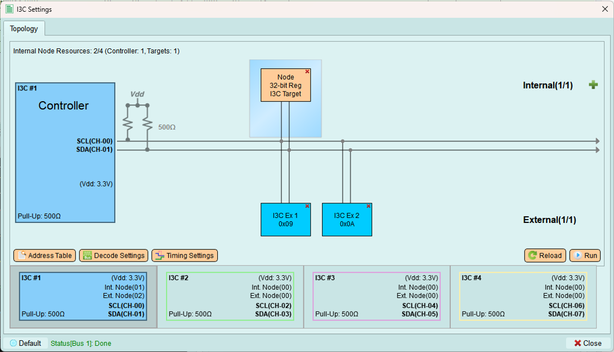
Configure I3C controller settings, manage device addresses, and send transactions.
Address table
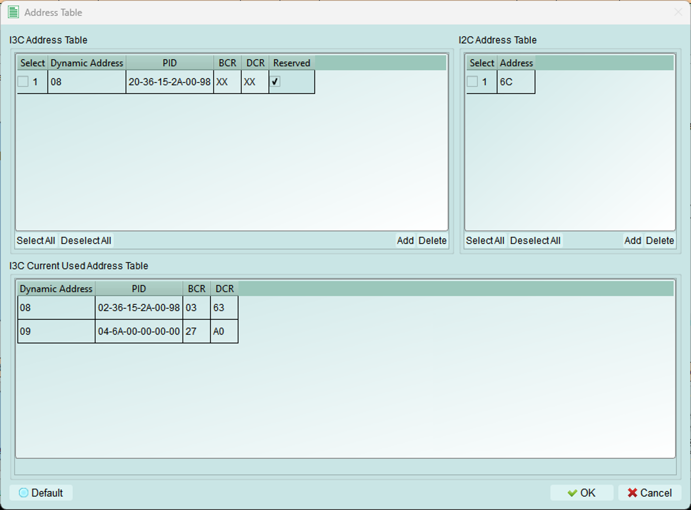
Manage addresses for I3C and legacy I2C devices on the bus.
I3C address table
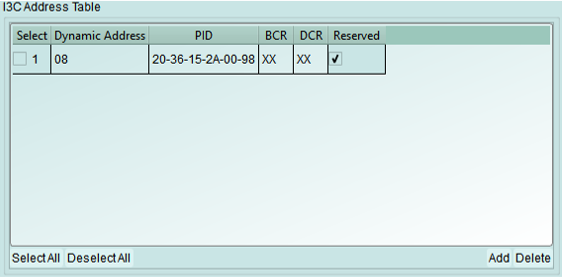
Reserve dynamic addresses for I3C devices by specifying their device characteristics.
Configuration fields:
- PID (Provisional ID): 48-bit unique device identifier
- BCR (Bus Characteristics Register): Device capabilities and role
- DCR (Device Characteristics Register): Device type classification
- Dynamic Address: Preferred address for assignment
Address assignment:
If the requested dynamic address is already in use, the controller automatically increments the value until an available address is found.
Use X (Don't Care): Enter X in fields where the specific value doesn't matter for your test.
I2C address table
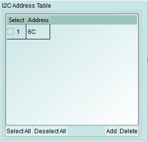
Add legacy I2C devices to the controller's device list.
When to use:
- External I2C devices are connected to the bus
- Testing mixed I3C and I2C configurations
- Maintaining legacy device compatibility
Note: I2C devices use static addresses and do not participate in dynamic address assignment.
In-used table
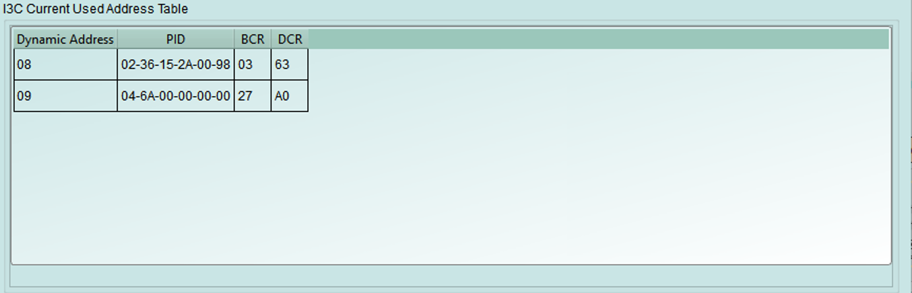
View I3C devices that have been assigned dynamic addresses and are currently active on the bus.
Displayed information:
- Dynamic addresses currently assigned
- Device PID
- Device BCR and DCR
- Assignment status
Decode settings
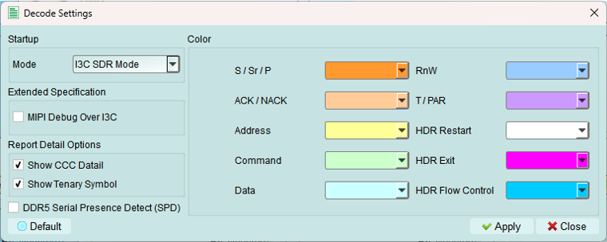
Configure Logic Analyzer parameters for I3C signal decoding.
Configuration options
- Color: Select colors for Logic Analyzer decode elements
- Customize for better visual distinction
-
Match your preferred color scheme
-
Startup mode: Select the initial decode mode for the Logic Analyzer
- SDR mode (default): Standard Single Data Rate - keep this for normal operation
-
HDR modes: High Data Rate modes (DDR, TSP, TSL, etc.)
-
Extended specification: Enable MIPI I3C debug information
- Shows additional protocol details
- Useful for compliance testing
-
Provides deeper insight into I3C operation
-
Report detail option: Enable detailed decoding information
- More verbose decode output
- Includes timing margins and protocol details
- Helpful for debugging complex issues
Timing settings
Configure I3C timing parameters to match device requirements or test specific timing scenarios.
Base timing unit: 5 ns minimum
Important: All timing values must be multiples of 5 ns. Values below 5 ns are not permitted.
Common settings
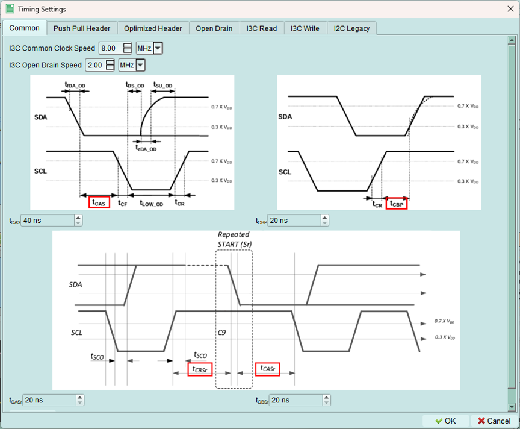
Configure core I3C timing parameters.
1. I3C clock speed range: 100 Hz to 13 MHz
2. Open drain clock speed range: 100 Hz to 5 MHz
3. Timing parameters (base unit: 5 ns):
- tCAS: Clock-to-data setup time
- tCBP: Clock-to-data valid time
- tCASr: Clock-to-data setup time (read)
- tCBSr: Clock-to-data valid time (read)
Push-pull header
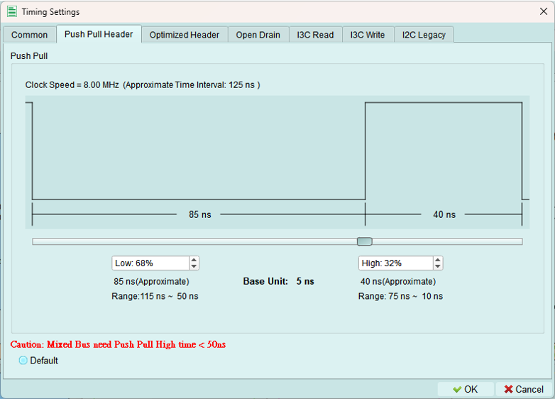
Configure timing for push-pull mode headers.
Use for: High-speed I3C transactions using push-pull drivers on both SCL and SDA.
Optimized header
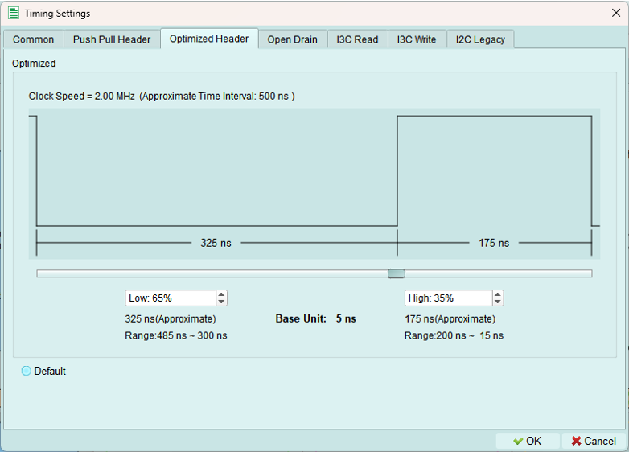
Configure timing for optimized push-pull headers with enhanced performance.
Open drain modes
I3C uses open drain for legacy I2C compatibility and some control operations.
1. Open drain fast
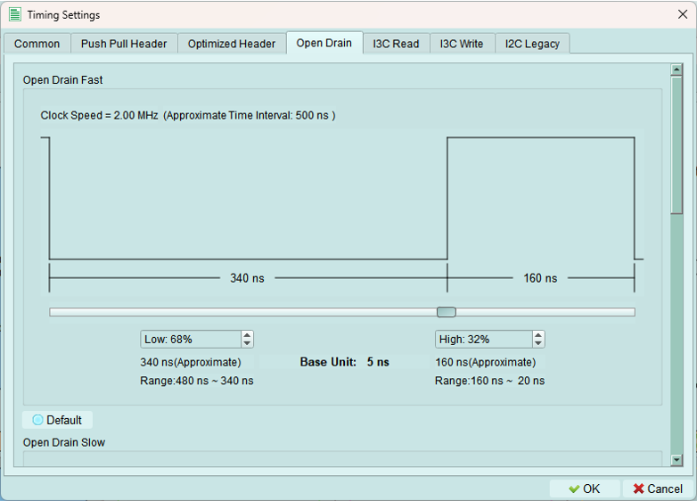
Fast open-drain timing for I2C-compatible operations at higher speeds.
2. Open drain slow
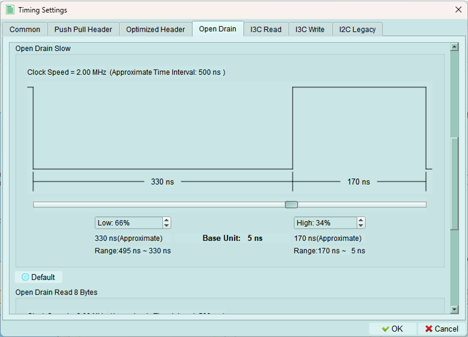
Slower open-drain timing for maximum I2C compatibility.
3. Open drain read 8 bytes
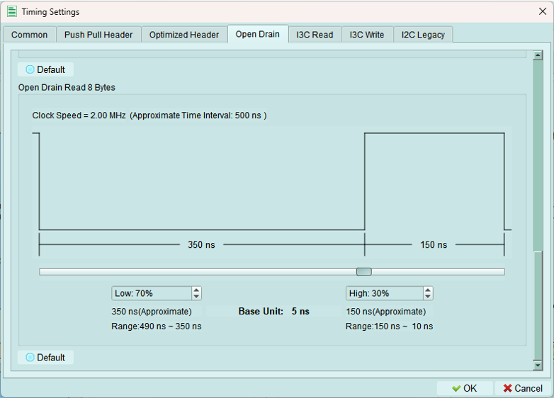
Optimized timing for reading 8-byte blocks in open-drain mode.
I3C read
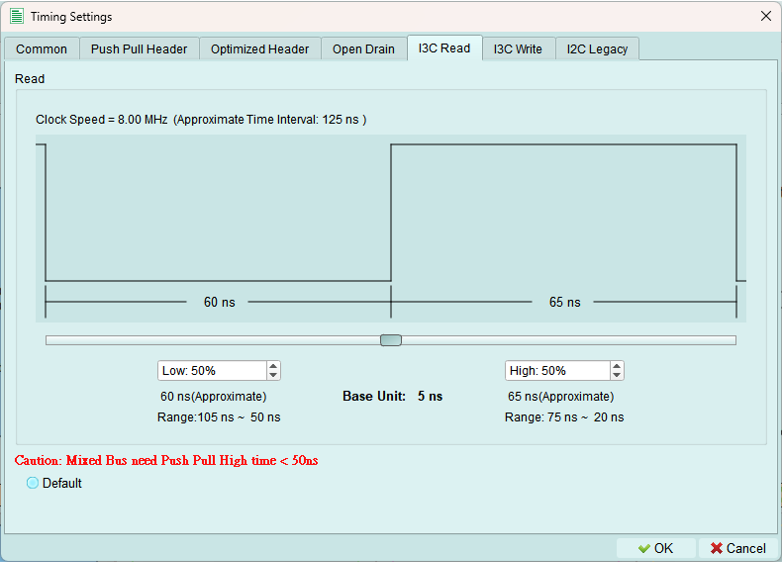
Push-pull speed mode
Configure timing parameters for I3C READ transactions.
Use for: High-speed private READ operations from I3C targets.
I3C write
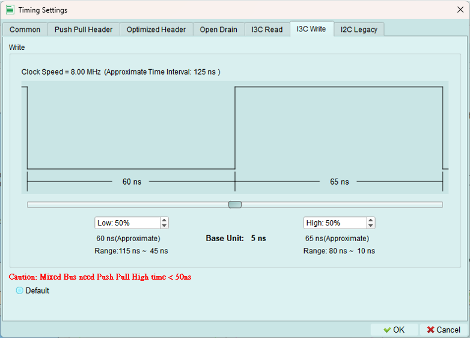
Push-pull speed mode
Configure timing parameters for I3C WRITE transactions.
Use for: High-speed private WRITE operations to I3C targets.
Legacy I2C
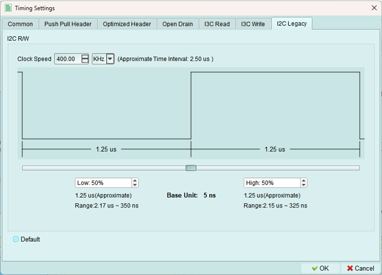
Configure timing for legacy I2C device communication.
Speed range: 100 Hz to 1 MHz
I2C standard speeds:
- Standard mode: 100 kHz
- Fast mode: 400 kHz
- Fast-mode Plus: 1 MHz
Use for: Communicating with I2C devices on an I3C bus.
Run
Upload the configured topology to the exerciser device and activate the bus.
What's uploaded:
- Controller and internal node configurations
- Device addresses (static and dynamic)
- Internal node types and characteristics
- Timing settings
- All topology parameters
Purpose: The exerciser needs this complete configuration to properly initiate transactions and respond to device requests.
Run process
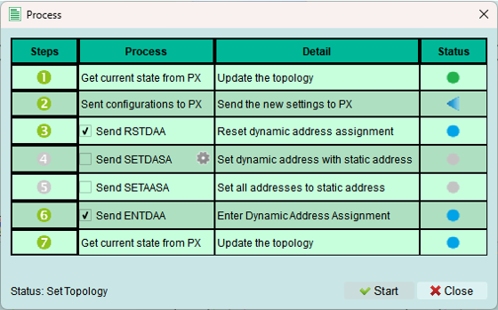
The Run process executes several steps. Some steps are optional depending on your configuration.
Status indicators:
Error occurred - Check status message for details
Wait for processing - Step is currently executing
Skip this process - Step not needed for current configuration
Process succeeded - Step completed successfully
Successful activation
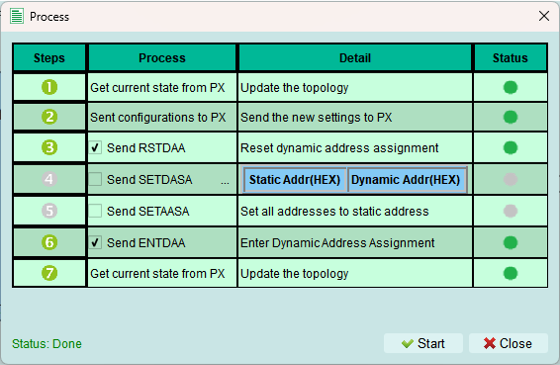
When all steps complete successfully, the exerciser is active and ready to send commands.
What this means:
- Topology is loaded
- Device is initialized
- Bus is operational
- Ready to send transactions
Reload
Refresh the topology display from the exerciser device.
Use cases:
- Verify current device configuration
- Sync after external changes (e.g., Python API updates)
- Refresh after device reset
- Check dynamic address assignments
When building topology via Python code: Use Reload to update the GUI with the current exerciser state.
Tips and best practices
Address table management
- Define all known devices in address tables before running
- Use PID, BCR, DCR values from device datasheets
- Test with simple topology first, then add complexity
- Verify addresses don't conflict
Timing configuration
- Start with default timing values
- Adjust only if devices require specific timing
- Verify timing meets MIPI I3C specification
- Test timing margins if validating device compliance
Run process troubleshooting
If Run fails:
- Check error message for specific issue
- Verify all required fields are filled
- Confirm addresses don't conflict
- Check internal node configurations
- Ensure timing values are valid (multiples of 5 ns)